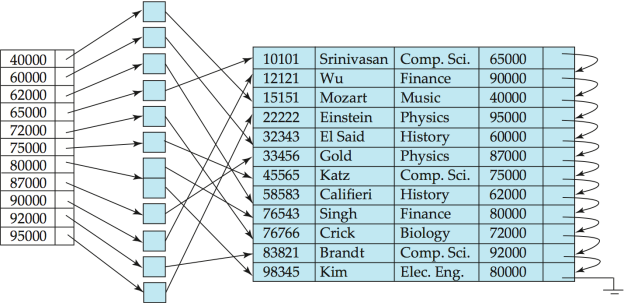
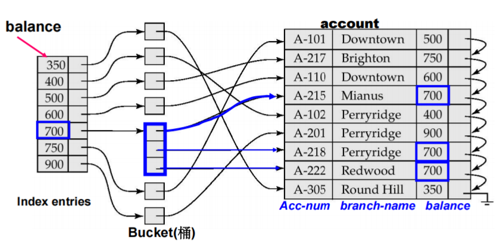
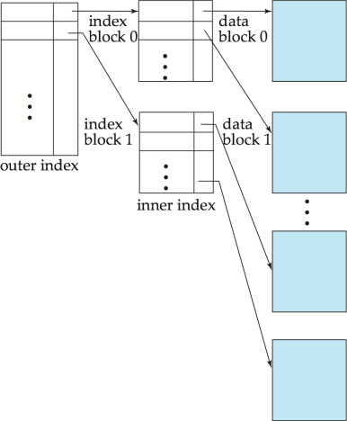
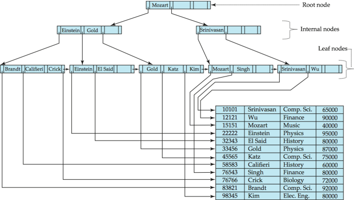
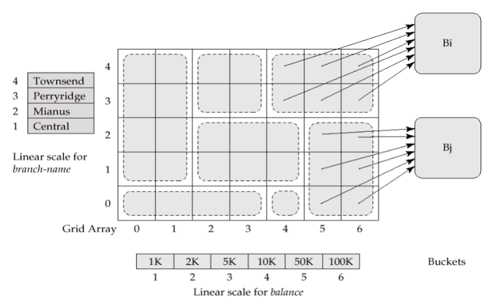
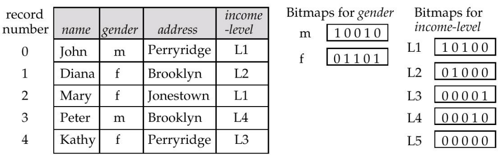

索引与哈希¶
- 索引目的：加快对所需数据的访问
- 搜索码 (Search Key)：用于在文件中查找记录的一个属性或一组属性
- 索引文件
- 由形式为 (搜索码, 指针) 的记录（称为索引项）组成
- 通常比原始文件小得多
- 索引类型：
- 顺序索引：搜索码（索引项）按排序好的顺序存储
- 散列索引：搜索码（索引项）通过散列函数均匀地分布在“桶”中
- 索引评估指标：支持高效访问的类型（点查询与范围查询）、访问时间、插入时间、删除时间、空间开销
Quote
时间效率和空间效率是衡量索引技术最主要的指标，也是数据库系统组织和管理技术的关注焦点之一。
顺序索引¶
- 顺序排序文件：数据文件中的记录按搜索码排序
- 索引顺序文件：具有主索引的顺序排序文件
- 缺点：
- 随着文件增大，性能会下降，因为会产生大量的溢出块
- 需要定期对整个文件进行重组
索引类型¶
主索引 vs 辅助索引
- 数据按主键排序
- 在主键上建的索引 = 主索引
- 在其他属性上建的索引 = 辅助索引
- 数据按非主键排序：假设你有一个
Student表，主键是Sno，数据文件物理上按照Dept排序存储
- 在
Dept上建的索引 = 主索引（因为它决定了物理顺序） - 在
Sno上建的索引 = 辅助索引
- 主索引：与对应的数据文件本身的排列顺序相同的索引，也称为聚集索引
主索引
- 主索引的搜索键通常是但并非一定是主码
- 非顺序文件没有主索引，但关系可以有主码
- 主索引类型：
- 稠密索引：文件中的每个搜索码值在索引中都有一个索引项
- 可用于顺序文件和非顺序文件
- 稀疏索引：仅为部分搜索码值包含索引项
- 只能用于顺序文件
- 搜索方法：先找到小于等于搜索码 K 的最大索引值，然后从该点开始顺序搜索文件
- 优点：占用的空间更少，维护开销更低
- 缺点：查找速度通常比稠密索引慢
- 辅助索引：定义的搜索码所指定的顺序与数据文件的物理顺序不同，也称为非聚集索引
- 建立一个辅助索引，为每个搜索键值提供一个索引记录
- 该索引记录指向一个存储桶，其中包含指向具有该特定搜索键值的所有实际记录的指针

Warning
- 辅助索引不能使用稀疏索引，每条记录都必须有指针指向
- 但 search-key 常存在重复项，而 index entry 不能有重复，否则查找算法复杂化, 为此使用 bucket 结构
- 使用主索引进行顺序扫描效率很高，但使用辅助索引进行顺序扫描则代价昂贵：每次记录访问都可能需要从磁盘获取一个新的数据块
Example

Info
如果主索引太大而无法放入内存，访问成本就会变得很高：使用多级索引
- 多级索引：把内层索引文件看作顺序数据文件，在其上建立外层的稀疏索引
- 外层索引：主索引的稀疏索引
- 内层索引：主索引文件

索引更新¶
Info
该部分包含删除和插入操作，具体例子请查看 PPT：Lec 9_Indexing and Hashing
补充：插入操作可能会出现 overflow
多级索引
由底层逐级向上层扩展，每一层的处理过程与上述单层索引情况下类似
B+ 树索引文件¶
- B+ 树索引文件：
- 优点：
- 在面对插入和删除操作时，能通过微小的局部更改自动进行自我重组
- 不需要为了维持性能而重组整个文件
- 缺点：额外的插入和删除开销；空间开销

- 特性
- 非叶节点相当于多级稀疏索引
- 每一个非根且非叶的节点拥有 \(\lceil n/2 \rceil\) 到 \(n\) 个子节点
- 一个叶节点拥有 \(\lceil (n-1)/2 \rceil\) 到 \(n-1\) 个值
- 如果文件中有 \(K\) 个搜索键值，树的高度不超过 \(\lceil \log_{\lceil n/2 \rceil}(K) \rceil\)
- 插入时分裂叶节点：将 \(n\) 个（键值，指针）对按排序顺序排列，将前 \(\lceil n/2 \rceil\) 个放在原节点中，其余的放在一个新节点中
非唯一搜索键代替方案
- 为每个键维护一个元组指针列表：需要额外的代码来处理长列表；如果搜索键存在大量重复，删除元组的代价可能很高；空间开销低，查询无额外成本
- 通过添加记录标识符 (record-identifier) 使搜索键唯一：键的存储开销增加；插入/删除的代码更简单；被广泛使用
B+ 树索引文件组织
良好的空间利用率非常重要，因为记录占用的空间比指针更多
为了提高空间利用率，在分裂和合并过程中让更多兄弟节点参与重新分配
e.g. 让 2 个兄弟节点参与重新分配（以尽可能避免分裂/合并），可以使每个节点至少拥有 \(\lfloor 2n/3 \rfloor\) 个条目
* B 树索引文件
- 与 B+ 树类似，但 B 树仅允许搜索键值出现一次：消除了搜索键的冗余存储
- 优点：相比对应的 B+ 树，可能使用更少的树节点（因为没有重复键）；有时可以在到达叶节点之前就找到搜索键值
- 缺点：只有极小比例的搜索键值能被提前找到；非叶节点更大，导致扇出 (fan-out) 降低，因此 B 树通常比对应的 B+ 树深度更深；插入和删除操作比 B+ 树更复杂；实现难度高于 B+ 树
- 通常情况下，B 树的优点并不足以抵消其缺点
hash¶
- 散列索引将搜索键及其关联的记录指针组织成散列文件结构
- 散列索引总是辅助索引
* 静态散列¶
- 静态散列：桶数量固定
- 哈希函数：直接从记录的搜索键值获取其所在的存储桶
- 最差的散列函数会将所有搜索键值映射到同一个存储桶，使得访问时间与文件中的搜索键值数量成正比
- 理想的散列函数是均匀的（每个存储桶被分配到相同数量的搜索键值）、随机的（每个存储桶都将分配到相同数量的记录）
- 桶溢出
- 原因
- 存储桶数量不足
- 记录分布倾斜：多条记录具有相同的搜索键值；所选散列函数导致键值分布不均匀
- 处理：虽然存储桶溢出的概率可以降低，但无法消除
- 闭散列：使用溢出桶（溢出桶通过溢出链连接）
- 开散列：不适用于数据库
静态散列缺点
- 如果初始存储桶数量太小，性能会因溢出过多而下降
- 如果预估未来的文件大小并据此分配存储桶数量，初始阶段会浪费大量空间
- 如果数据库缩小，同样会造成空间浪费
- 如果定期使用新的散列函数对文件进行重新组织，代价极高
* 动态散列¶
- 动态散列：适用于大小会增长和缩小的数据库，允许动态修改散列函数
- 可扩充散列：动态散列的一种形式，只使用散列函数结果的一个前缀来索引存储桶地址表
可扩展散列的更新
- 插入：若目标存储桶已满
- \(i_j\)；所有指向同一个存储桶的条目在其前 \(i_j\) 位上具有相同的值
- \(i\)：前缀的长度
- \(i > i_j\)（桶满，但地址表还有空间）：创建一个新桶，将原桶和新桶的局部深度都加 1，然后重新分配原桶中的记录，地址表中的一部分指针指向新桶
- \(i = i_j\)（桶满，且地址表指针已用尽）：将全局深度 \(i\) 加 1，地址表条目数量翻倍；原本的一个条目分裂为两个，再次按照 \(i > i_j\) 的方式处理桶分裂
- 删除：可以进行存储桶的合并（只能与具有相同 \(i_j\) 值且具有相同 \(i_j-1\) 前缀的存储桶合并）
写优化索引¶
- 日志结构合并树 (LSM 树)
- 内存树：\(L_0\)；磁盘：\(L_1, L_2, L_3...\)
- 插入核心过程：
- 记录首先被插入到内存树中
- 当内存树满时，记录被移动到磁盘 \(L_1\) 树：通过将 \(L_0\) 树中的记录与现有的 \(L_1\) 树合并，使用自底向上构建法创建 \(B^+\) 树
- 依此类推，支持更多层级
- 删除操作通过添加特殊的“删除”条目来处理
- 更新操作使用“插入+删除”组合来处理
- \(L_{i+1}\) 树的大小阈值是 \(L_i\) 树大小阈值的 \(k\) 倍
- 优点：
- 插入操作仅使用顺序 I/O 操作完成
- 叶节点是满的，避免了空间浪费
- 与普通的 B+ 树相比（在达到一定规模前），每条插入记录的 I/O 操作次数更少
- 缺点：查询必须搜索多个树；每一层的全部内容会被多次复制
- 分级合并索引 (Stepped-merge index)：LSM 树的一种变体，每一层包含多个树
- 与 LSM 树相比降低了写入成本
- 但查询开销更高：使用布隆过滤器 (Bloom filters) 来避免在大多数树中进行查找
- 缓冲树：LSM 树的替代方案
- 核心思想： \(B^+\) 树的每个内部节点都有一个用于存储插入操作的缓冲区
- 当缓冲区满时，插入操作被移动到更低层级
- 配合大容量缓冲区，每次可以将多条记录移动到更低层级
- 每条记录的 I/O 开销相应减少
- 优点：查询开销较小；可以配合任何树形索引结构使用；用于 PostgreSQL 的通用搜索树 (GiST) 索引
- 缺点：比 LSM 树产生更多的随机 I/O
SQL 中的索引¶
- 创建索引
| SQL | |
|---|---|
Abstract
使用 create unique index 隐式指定并强制要求搜索键必须是候选键
注意：如果系统支持 SQL 唯一性完整性约束，则通常不需要此操作
- 删除索引
| SQL | |
|---|---|
* 多键访问¶
- 多键访问：针对某些类型的查询使用多个索引
- 多属性索引：有一个基于组合搜索键
(branch-name, balance)的索引 - 网格文件：用于加速涉及一个或多个比较运算符的通用多搜索键查询的结构
- 具有单个网格数组，并且为每个搜索键属性配备一个线性标度
- 网格数组的维数等于搜索键属性的数量
- 若要查找搜索键值对应的桶，需使用线性标度定位其单元格的行和列，并跟随指针

- 位图索引：一种特殊类型的索引，旨在对多个键进行高效查询
- 适用范围：适用于取值范围较小的属性
- 通过位图运算来回答查询：and or not
- 存在位图：用于标记记录位置是否存在有效记录
